Mecanização agrícola:
Tratores e seus constituintes (P1)
Instituto Federal do Paraná
Curso Superior em Engenharia Agronômica
28 de agosto de 2026
O que é um trator?
O que é um trator?
Máquina autopropelida dotada de rodas, com ou sem pneus, ou esteiras, projetada principalmente para tracionar implementos agrícolas a ela acoplados - ABNT, 1997
Uma máquina autopropelida provida de meios que, além de lhe conferirem apoio estável sobre uma superfície horizontal e impenetrável, capacitam-no a tracionar, transportar e fornecer potência mecânica, para movimentar os órgãos ativos de máquinas e implementos agrícolas - Mialhe (1980)
O que é um trator?
É um veículo para operação fora de estrada e em estrada, podendo transportar, guiar, tracionar e acionar implementos ou máquinas (móveis ou estacionárias) e tracionar reboques - Renius (1999)
Uma unidade móvel de potência composta de motor, transmissão, sistema de direção e de sustentação e componentes complementares, onde se acoplam implementos e máquinas com diversas funções - Schlosser (2001)
O trator agrícola
Trator é uma máquina de tracionar!
- Máquinas mais versáteis na agricultura;
- Função de realizar trabalho;
- Tracionar;
- Transportar;
- Fornecer potência para outras máquinas e implementos.
Histórico sobre tratores
William Murdock
Primeiro modelo de motor a vapor de alta pressão
Relatos
Uso de motor a vapor para mover arado
Comercialização de motores a vapor (estacionários e portáteis)
Motor a vapor disputa mercado agrícola com a tração animal
Nikolaus August Otto registra a patente do motor a combustão interna
John Froelich
Cria o primeiro trator a gasolina
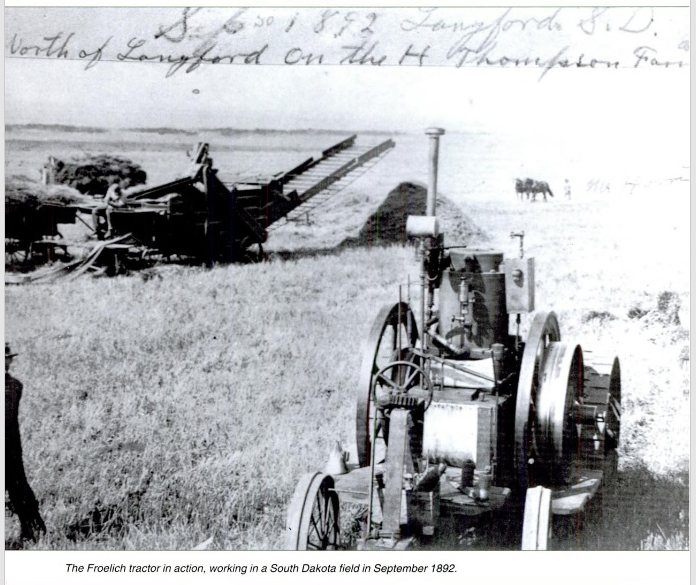
Waterloo Gasoline Motor Company
Froelich recebe investidores para abrir a empresa
Waterloo Boy
A empresa foi vendida para John W. Miller e o nome mudou para: “Waterloo Gasoline Engine Company”
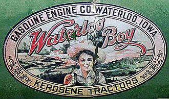
Produção em massa
A produção de tratores é feita em série, anteriormente artesanal

Waterloo Boy
A empresa é comprada pela John Deere
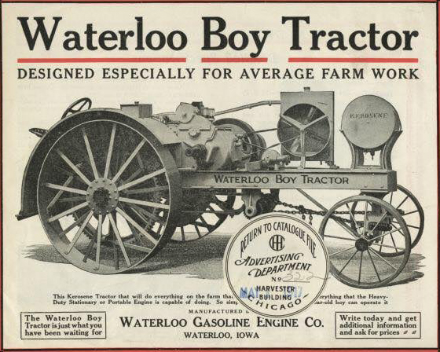
Ford
70% o mercado de tratores era da Ford
Sistema 3 pontos
Herry Ferguson e o sistema “três pontos”

Pneus de borracha
Empresa Continental desenvolve pneus pneumáticos
Empresas
Grandes fusões e aquisições entre empresas de máquinas agrícolas
O Ferguson
O trator padrão
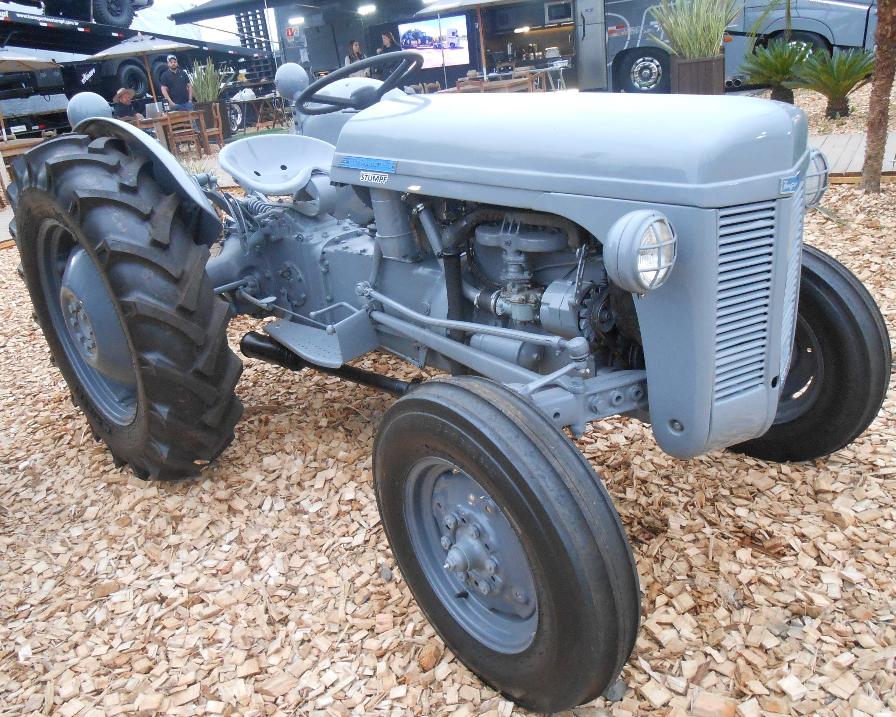
Histórico sobre tratores
John nunca recebeu reconhecimento por sua conquista, mas hoje é considerado o pai do trator!
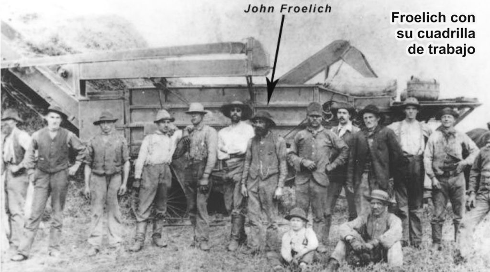
Marcas
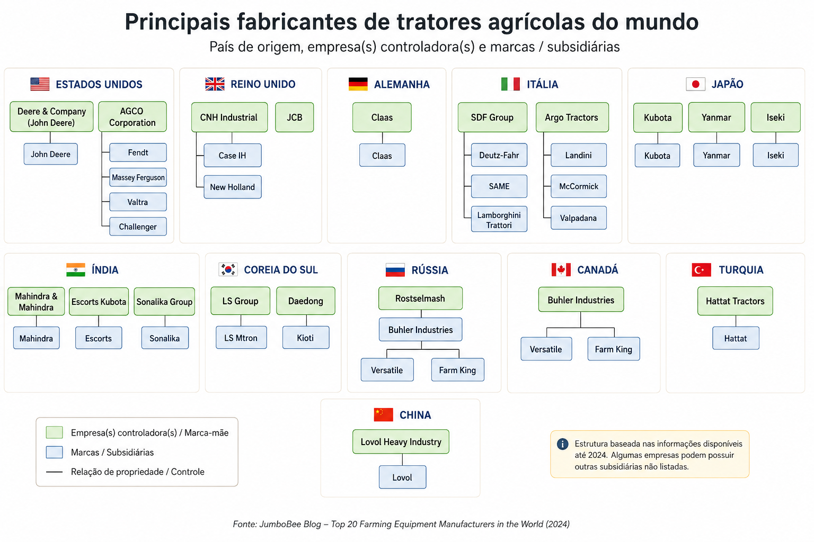
Classificação dos tratores
Classificação dos tratores
- Quanto ao uso;
- Tipo de rodado;
- Tração;
- Condições de equilíbrio;
- Transferência de massa;
- Empregabilidade.
Classificação dos tratores
Quanto ao uso:
- Tratores agrícolas;
- Tratores florestais;
- Tratores industriais;
- Tratores compactos;
- Tratores especiais;
- Tratores para jardinagem;
- Tratores para terraplanagem;
- Tratores autônomos;
Classificação dos tratores
Quanto ao uso:
Os Tratores agrícolas são projetados para atuar em conjunto com outras máquinas ou implementos.
Tarefas:
- Preparo do solo;
- Semeadura;
- Cultivo;
- Pulverização;
- Colheita.

Classificação dos tratores
Quanto ao uso:
Os Tratores florestais são destinados às atividades de manejo de florestas.
Características:
- Grande porte e massa;
- Trânsito em terrenos adversos (obstáculos);
- Grande potência e tração.
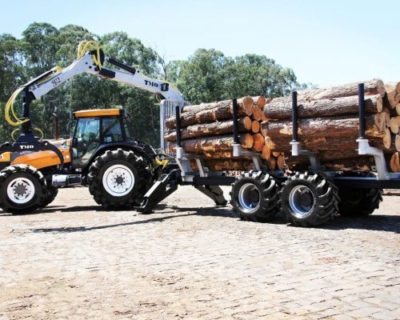
Classificação dos tratores
Quanto ao uso:
Os Tratores industriais são utilizados para aplicações industriais (obras e aeroportos).
Características:
- Possuem barra de tração;
- Ausência de sistema de 3 pontos;
- Ausência de tomada de potência;
- Potência dependente da operação.
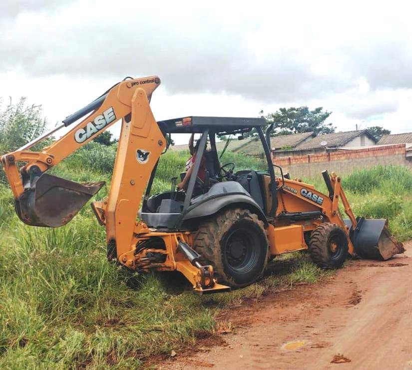
Classificação dos tratores
Quanto ao uso:
Os Tratores compactos são pequenos tratores agrícolas. Utilizados em propriedades de menor tamanho.
Características:
- Dimensões reduzidas;
- Manobras em espaço estreito;
- Possuem tomada de potência e sistema de 3 pontos.
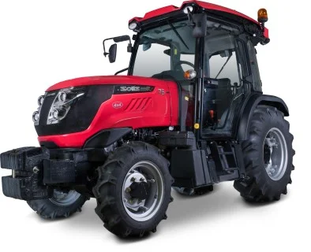
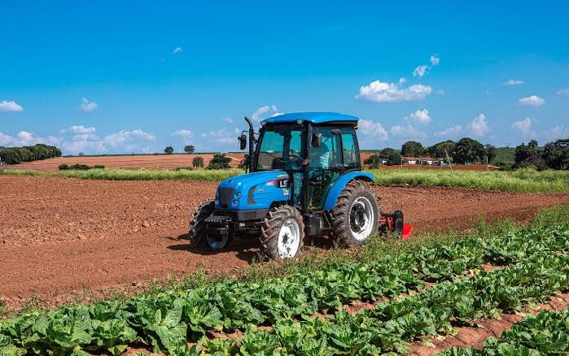
Classificação dos tratores
Quanto ao uso:
Os Tratores especiais são projetados para operações específicas ou trabalho em ambiente adverso (cultura com espaçamento reduzido e terrenos acidentados).
Características:
- Executam manobras em espaços reduzidos;
- Também chamados de “fruteiros” ou “cafeeiros”.
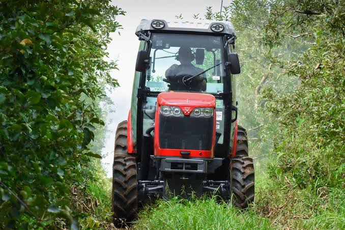
Classificação dos tratores
Quanto ao uso:
Os Tratores para jardinagem são de baixa potência e para uso em jardins ou gramados.
Características:
- Até 10 cv.
Classificação dos tratores
Quanto ao uso:
Os Tratores autônomos “não” necessitam de operadores.
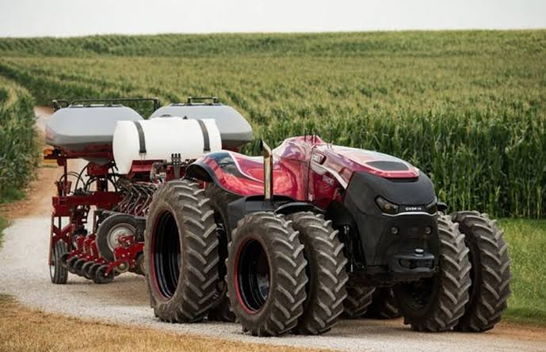
Classificação dos tratores
Quanto ao tipo de rodado e tração:
- Rodas;
- Semi-esteiras;
- Esteiras.
Classificação dos tratores
Quanto ao tipo de rodado e tração:
Tratores de duas rodas
Possuem duas rodas motrizes e um par de alças (rabiças). O operador conduz o trator caminhando ou de forma sentada atrás do trator.
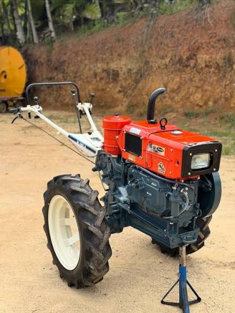
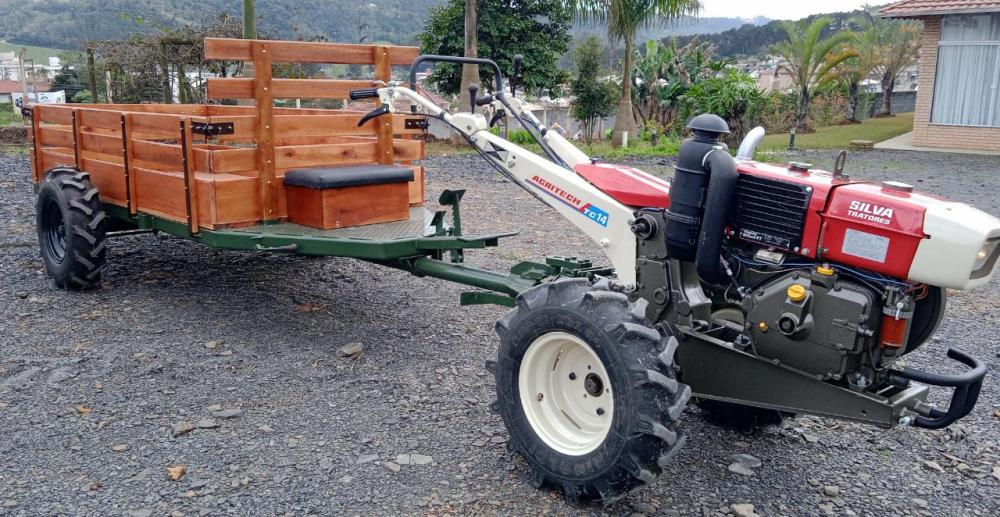
Classificação dos tratores
Quanto ao tipo de rodado e tração:
Tratores de três rodas (triciclos)
Possuem duas rodas motoras traseiras e uma frontal movida.
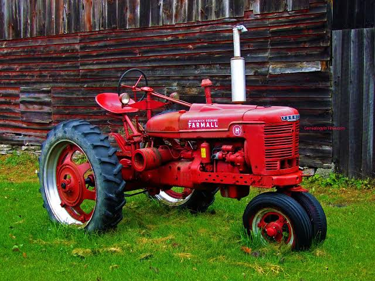
Classificação dos tratores
Quanto ao tipo de rodado e tração:
Tratores de quatro rodas
Possuem duas rodas motrizes no eixo traseiro e duas rodas movidas no eixo dianteiro.
- Rodas traseiras são de maior diâmetro;
- Rodas dianteiras de menor diâmetro;
- Sustentação por 4 pontos de apoio;
- Maior estabilidade.
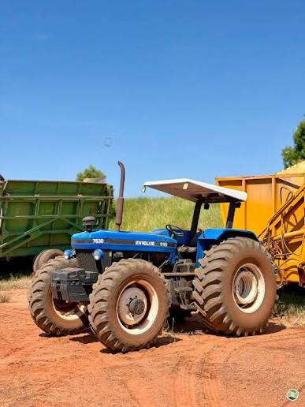
Classificação dos tratores
Quanto ao tipo de rodado e tração:
Tratores de semiesteiras
Combinam duas rodas motrizes na frente e duas esteiras na parte traseira.
- Maior tração e mobilidade (em relação ao trator de rodas);
- Distribuição do peso nas esteiras (mais pontos de contato);
- Maior manutenção.
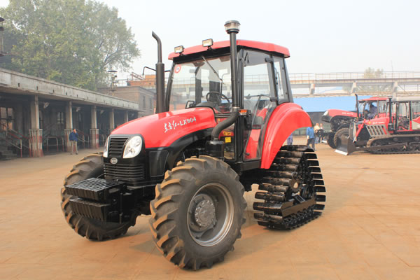
Classificação dos tratores
Quanto ao tipo de rodado e tração:
Tratores de esteiras
Os rodados são constituídos por 2 ou 4 esteiras. Esteiras possuem rodas motoras denteadas e rodas guias movidas ligadas por correntes.
- Direcionamento: diferença de velocidade entre esteiras;
- Esteiras de borracha ou aço;
- Perfil: triangular, retangular ou trapezoidal.
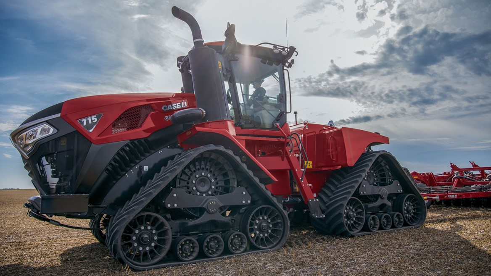
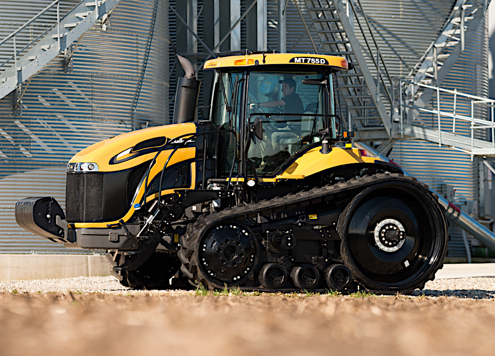
Classificação dos tratores
Quanto ao tipo de rodado e tração:
Tratores de esteiras
- Possuem elevada potência;
- São de aquisição inviável para pequenos e médios produtores;
- Destinados a serviços mais pesados (alta tração);
- Maior estabilidade;
- Maior aderência (centro de gravidade);
- Menor compactação do solo (área de contato).
Classificação dos tratores
Quanto à tração:
Classificação apenas para tratores de rodas
- 4x2;
- 4x2 TDA;
- 4x4;
- 6x6.
Classificação dos tratores
Quanto à tração:
Tratores 4x2
Apresentam 4 rodas, com duas traseiras motrizes e 2 dianteiras direcionais.
- Rodas traseiras são de maior diâmetro e possuem pneus com garras para tração;
- Rodas dianteiras menores e pneus sem a presença de garras.
Também conhecidos como tratores standards
Classificação dos tratores
Quanto à tração:
Tratores 4x2
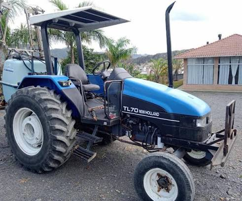
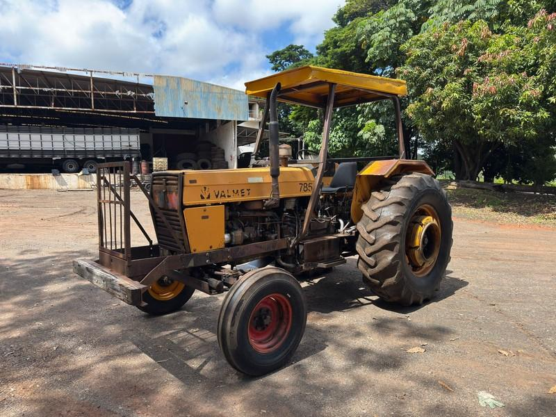
Classificação dos tratores
Quanto à tração:
Tratores 4x2 TDA
Apresentam 2 rodas de tração, mas a tração no eixo dianteiro é opcional. A tração também é chamada de tração dianteira auxiliar ou assistida (TDA).
- Dois eixos de tração;
- Rodas traseiras de maior diâmetro em relação às dianteiras;
- Todos os pneus possuem garras para tração;
A ligação da TDA liga também os eixos (dianteiro e traseiro). O eixo dianteiro gira com maior rotação que o eixo traseiro (avanço cinemático). Esses tratores também são chamados de tratores traçados.
Classificação dos tratores
Quanto à tração:
Tratores 4x2 TDA
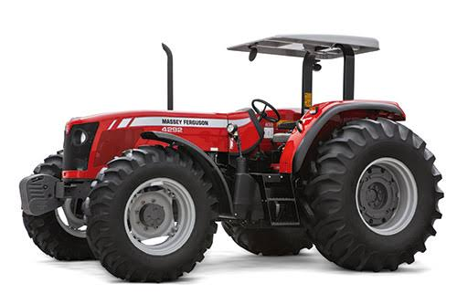

Classificação dos tratores
Quanto à tração:
Tratores 4x2 TDA acionamento
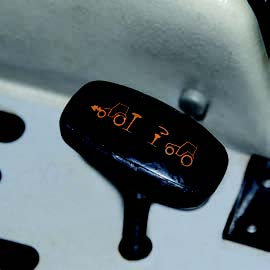
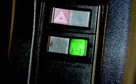
Classificação dos tratores
Quanto à tração:
Tratores 4x4
Possuem 4 rodas de mesmo diâmetro com tração total nos dois eixos e todos os pneus possuem garras.
Direção geralmente via articulação do chassi.
Classificação dos tratores
Quanto à tração:
Tratores 4x4
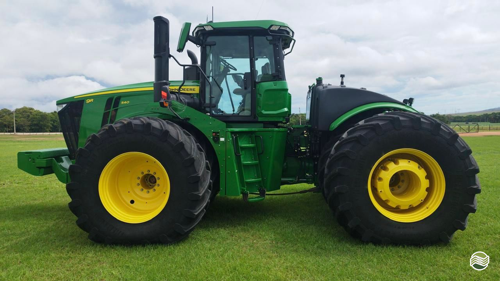
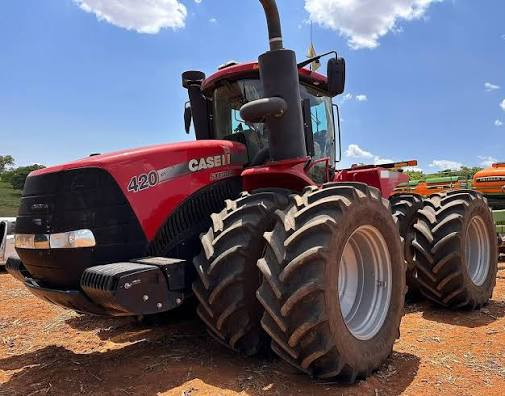
Classificação dos tratores
Quanto à tração:
Tratores 6x6
Possuem 3 eixos, com tração nas 6 rodas.
- Maior capacidade de carga;
- Estabilidade superior;
- Estabilidade e eficiência nas operações.
Classificação dos tratores
Quanto à tração:
Tratores 6x6
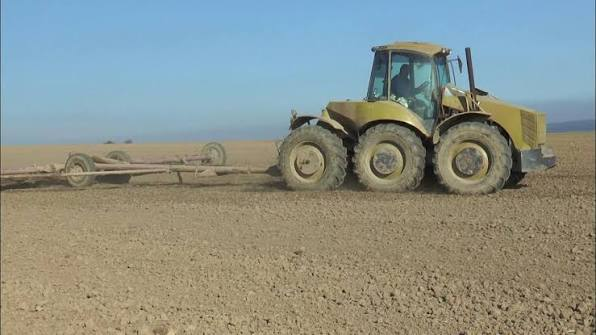
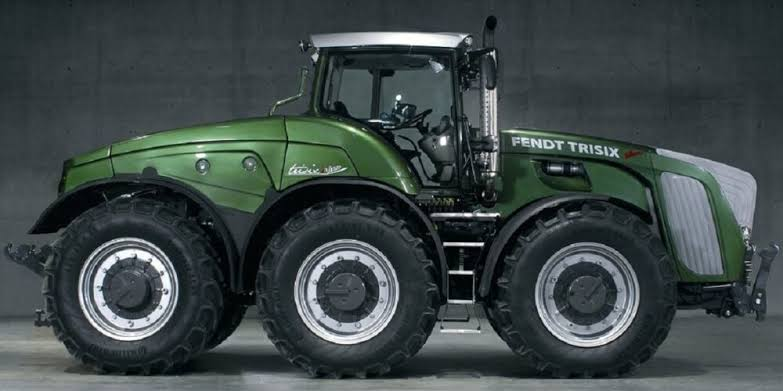
Classificação dos tratores
Quanto à potência motora:
| Classe | Potência (cv) | Potência (kW) |
|---|---|---|
| I | ≤ 49,9 | ≤ 36,9 |
| II | 50,0 a 99,9 | 37,0 a 73,9 |
| III | 100,0 a 199,9 | 74,0 a 146,9 |
| IV | ≥ 200,0 | ≥ 147,0 |
ANFAVEA (2016)
Classificação dos tratores
Quanto à potência motora:
| Classe | Denominação | Potência (cv) | Descrição |
|---|---|---|---|
| I | Muito pequeno | < 50 | |
| II | Pequeno | 50,1 – 79,9 | 3, 4 e 5 cilindros e cilindrada > 3,5 litros |
| III | Médio | 80 – 109,9 | 4, 5 e 6 cilindros |
| IV | Grande | 110 – 159,9 | 6 cilindros |
| V | Muito grande | 160 – 199,9 | > 6 cilindros |
| VI | Extra grande | ≥ 200 | > 6 cilindros e massa sem lastro > 8000 kg |
Adaptado de Farias (2014)
Classificação dos tratores
Quanto à potência motora:
| Classe | Potência (cv) | Potência (kW) |
|---|---|---|
| I | até 49 | até 36 |
| II | 50 a 99 | 36,8 a 72,8 |
| III | 100 a 149 | 73,5 a 109,6 |
| IV | 150 a 249 | 110,3 a 183,1 |
| V | 250 a 349 | 183,9 a 256,7 |
| VI | 350 a 449 | 257,4 a 330,2 |
| VII | 450 a 549 | 331,0 a 403,8 |
| VIII | 550 a 649 | 404,5 a 477,3 |
Adaptado de Schlosser et al. (2023)
Classificação dos tratores
Quanto à conformação do chassi:
Os tratores podem ser do tipo rígidos ou articulados.
De chassi rígido, a estrutura é uma peça única que conecta as partes dianteira e traseira da máquina.
De chassi articulado, possuem uma articulação central. São conhecidos pela alta potência, mas menos versáteis em acoplamento e em manobras.
Classificação dos tratores
Quanto à conformação do chassi:
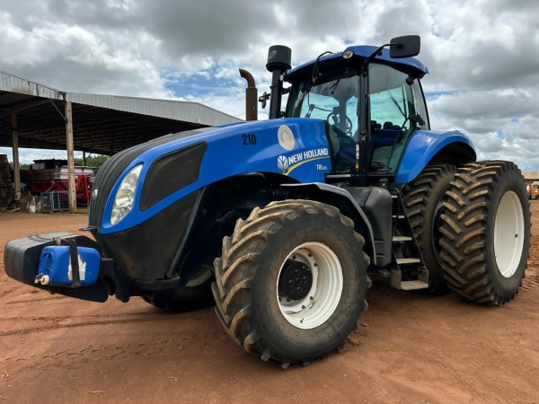
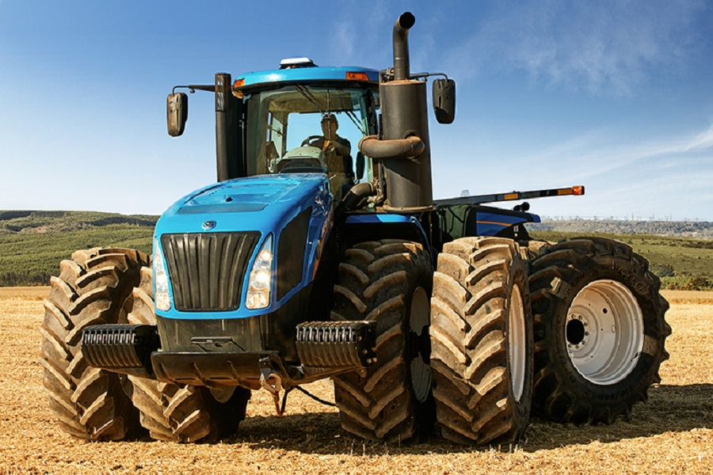
Classificação dos tratores
Quanto à configuração do posto do operador:
Classificação com relação ao ambiente de operação.
Os tratores podem ou não apresentar uma plataforma de operação.
- Acavalados;
- Semiplataformados;
- Plataformados;
- Cabinados.
Classificação dos tratores
Quanto à configuração do posto do operador:
Acavalados são os tratores que não possuem plataforma para operação.
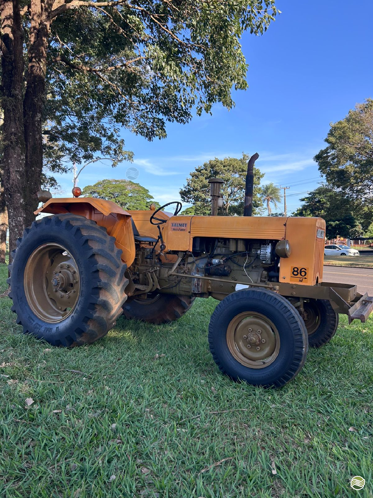
Classificação dos tratores
Quanto à configuração do posto do operador:
A plataforma é onde está o posto de trabalho. Integrada aos para-lamas, é uma plataforma aberta localizada na parte traseira do trator. Geralmente apresenta um toldo ou estrutura de proteção contra capotamento, assento com regulagens de suspensão e de posição.
Classificação dos tratores
Quanto à configuração do posto do operador:
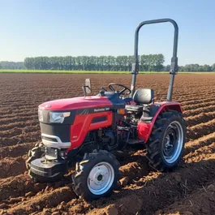
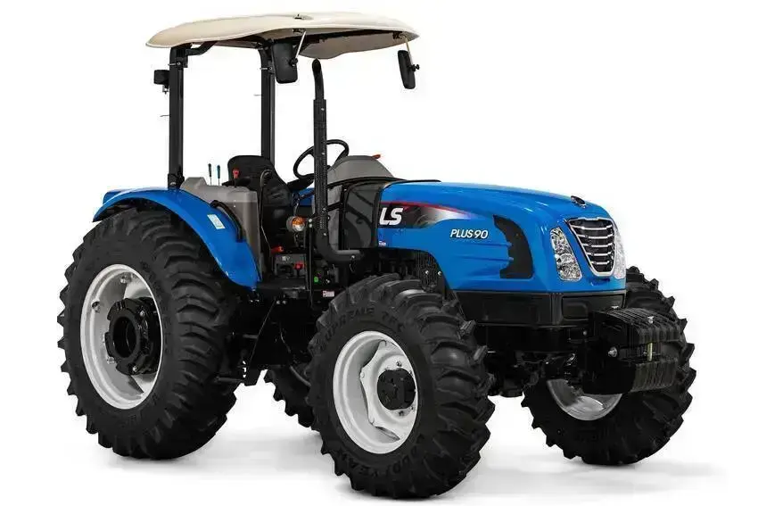
Classificação dos tratores
Quanto à configuração do posto do operador:
Cabinados são os tratores que possuem uma cabine fechada e climatizada.

Classificação dos tratores
Quanto à configuração do posto do operador:
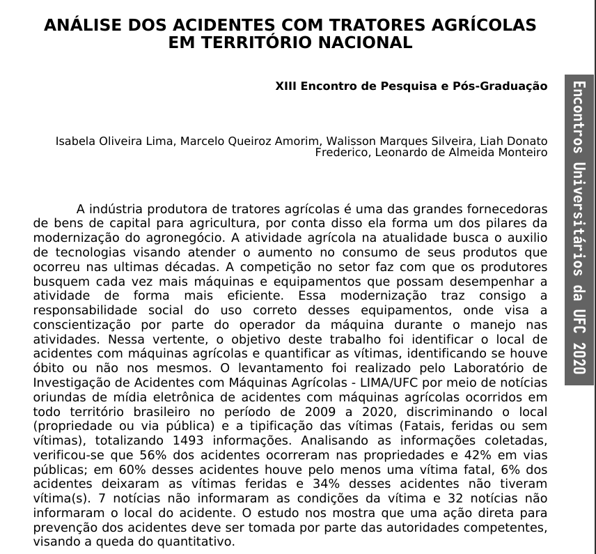
Classificação dos tratores
“Os dados coletados ao longo de 12 anos, também revelam que a região Sul do país tem o maior índice de acidentes”
Classificação dos tratores
Quanto à configuração do posto do operador:
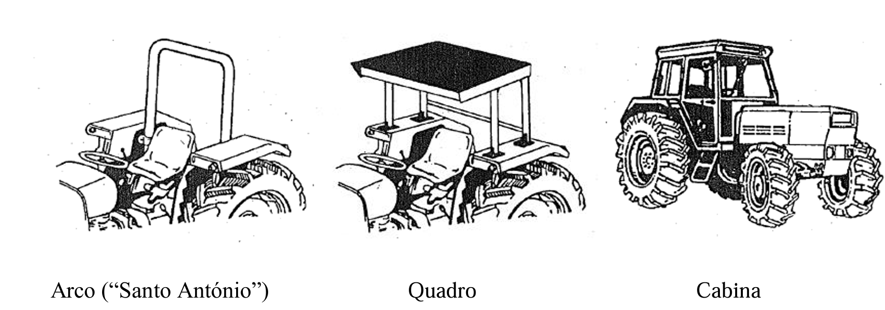
Briosa, 1999
Classificação dos tratores
Estrutura de proteção contra capotamento (Rollover protection structure)
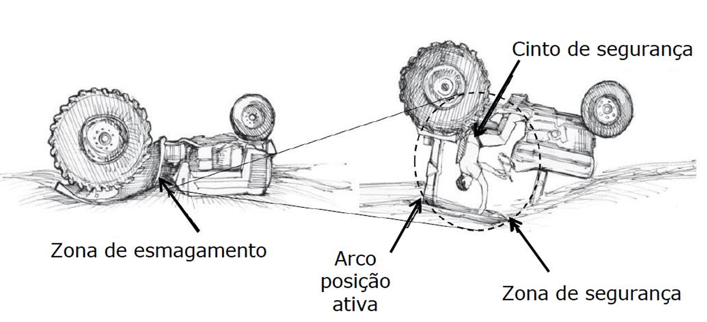
Workers Compensation Board of B. C. (2018)
Classificação dos tratores
Estrutura de proteção contra capotamento (Rollover protection structure)
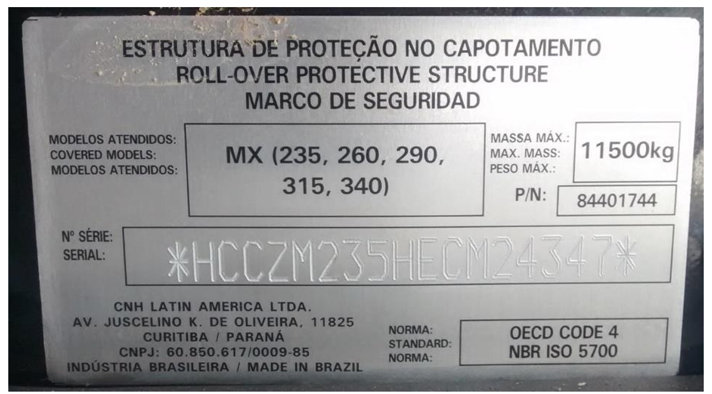
Barbieri, J. P. (2016)
Classificação dos tratores
Estrutura de proteção contra capotamento
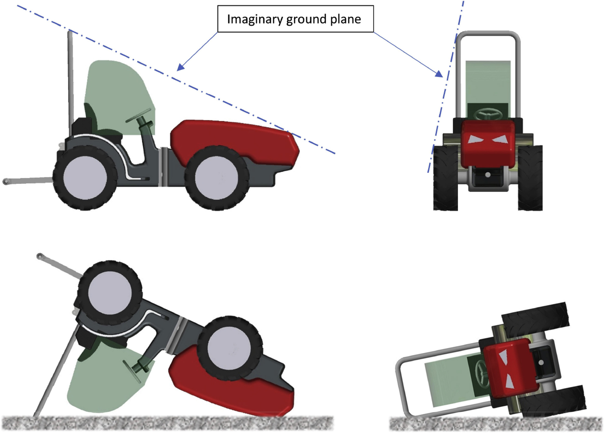
Guzzomi, A. L. et al. (2019)
Classificação dos tratores
Fases do capotamento (curiosidade):
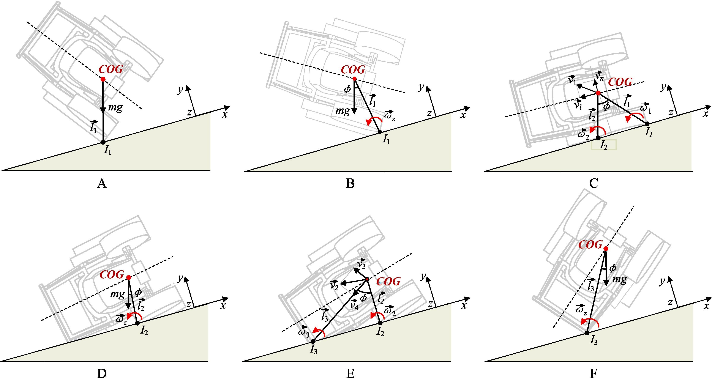
Wang, L. et al. (2024)
Classificação dos tratores
Fases do capotamento (curiosidade):
- Fase A: Iniciando um movimento de capotamento, a projeção vertical do COG do trator se estende além do ponto onde os pneus tocam o chão.
- Fase B: O trator gira livremente ao redor do ponto de contato inicial I1.
- Fase C: O lado externo do pneu do trator toca o chão e, subsequentemente, o ponto de contato inicial é transferido para o ponto de contato I2.
- Fase D: O trator continua girando livremente ao redor do novo ponto de contato I2.
- Fase E: À medida que o grau de capotamento se intensifica, o ROPS ou o topo do veículo começa a resistir ao impacto da capotagem. Durante essa fase, o operador pode estar sujeito a compressão ou colisão.
- Fase F: Se a energia de capotamento não for completamente dissipada, o trator continuará rolando morro abaixo na encosta.
Wang, L. et al. (2024)
Constituição dos tratores agrícolas
Constituição dos tratores agrícolas
Tratores agrícolas são compostos por vários componentes. Cada componente é responsável por determinadas funções.
- Chassi;
- Motor (já visto);
- Sistema de transmissão (próxima aula);
- Rodados (próxima aula);
- Órgãos de acoplamento;
- Barra de tração;
- Sistema hidráulico de 3 pontos;
- Órgãos de transmissão de energia;
- Tomada de potência;
- Sistema hidráulico auxiliar.
Constituição dos tratores agrícolas
Sistemas complementares:
- Sistema hidráulico;
- Sistema elétrico;
- Sistema eletrônico;
- Sistema de direção;
- Sistema de frenagem;
- Sistema de suspensão.
Constituição dos tratores agrícolas
Estrutura de suporte (chassi):
É a estrutura geral do trator, que permite a união de todos os órgãos constituintes da máquina.
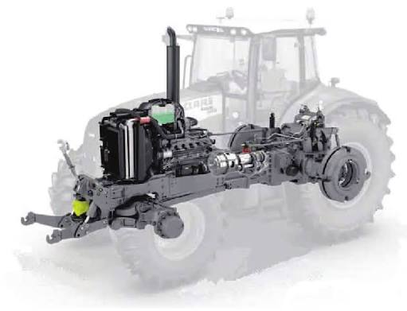
Constituição dos tratores agrícolas
Estrutura de suporte (chassi):
- Deve ser capaz de oferecer a resistência necessária aos esforços da tração;
- Deve suportar a carga do motor e dos demais componentes;
- Deve também suportar a transferência de carga advinda da máquina e implementos acoplados.
- Carga extra;
Constituição dos tratores agrícolas
Estrutura de suporte (chassi):
- Monobloco;
- Convencional;
- Semichassi;
- Articulado.
Constituição dos tratores agrícolas
Estrutura de suporte (chassi):
O monobloco é constituído do bloco do motor, a carcaça da caixa de câmbio, transmissão final e semieixos.
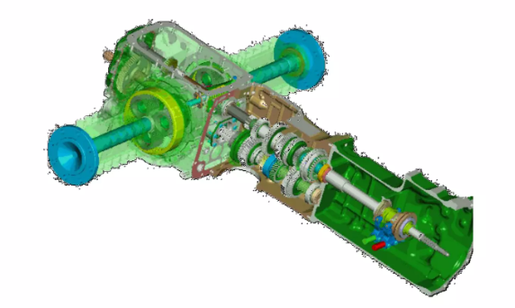
Constituição dos tratores agrícolas
Estrutura de suporte (chassi):
Chassi monobloco
pode conferir mais vibração durante a operação;
Têm um potencial maior para o rompimento na ligação entre as partes;
Possui uma manutenção mais complexa.
Constituição dos tratores agrícolas
Estrutura de suporte (chassi):
O chassi convencional ou modular é caracterizado por perfis metálicos que unem os dois eixos e servem de base para o apoio das demais partes do motor.
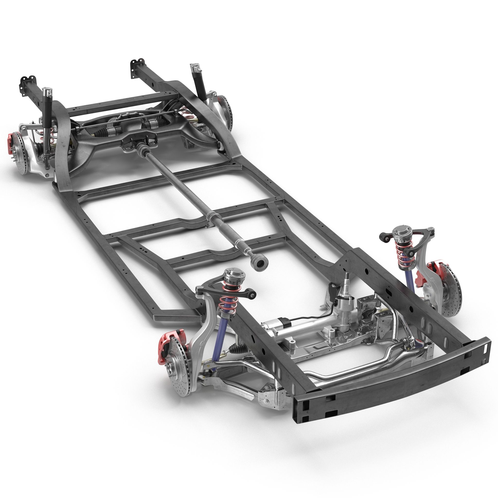
Constituição dos tratores agrícolas
Estrutura de suporte (chassi):
Chassi convencional
Maior isolamento das vibrações (operação mais suave e confortável);
Mais leve que outros tipos de estruturas (maior eficiência energética);
Trator mais dependente de lastro;
O custo desse tipo de configuração tende a ser maior.
Constituição dos tratores agrícolas
Estrutura de suporte (chassi):
O semichassi é aquele onde a parte dianteira do trator (motor) é montada em um chassi separado e os demais componentes são acoplados a esse chassi.
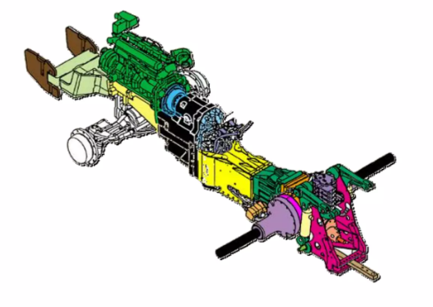
Constituição dos tratores agrícolas
Estrutura de suporte (chassi):
Semichassi
Utilizado em tratores acima de 180 CV;
Evita que os esforços da tração sejam absorvidos pelo motor.
Constituição dos tratores agrícolas
Estrutura de suporte (chassi):
Chassi articulado é uma estrutura com o propósito de aprimorar a manobrabilidade.
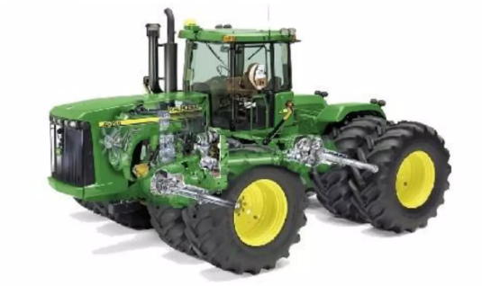
Constituição dos tratores agrícolas
Estrutura de suporte (chassi):
Chassi articulado
Empregado em tratores de alta potência;
O tamanho do veículo dificulta a manobra;
São empregadas articulações;
- Horizontais;
- Verticais;
- Ambas;
Distribuição mais equilibrada de peso;
- Maior estabilidade;
- Maior tração;
Constituição dos tratores agrícolas
Estrutura de suporte (chassi):
Chassi articulado
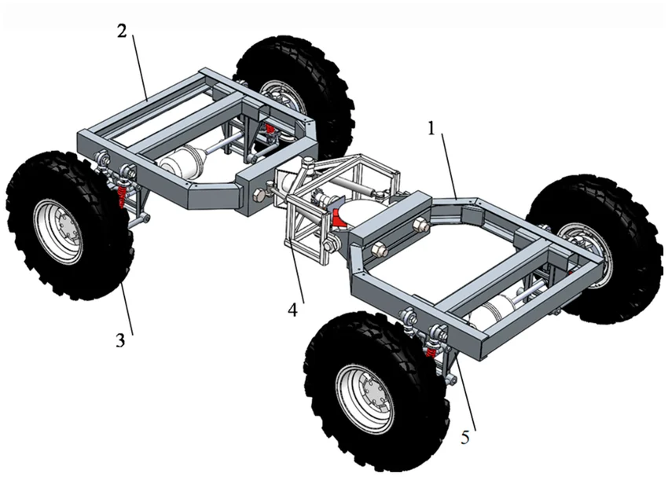
Órgãos de engate e transferência de energia
Órgãos de engate e transferência de energia
O que são?
Acoplamento: é a união entre dois ou mais corpos, formando um único conjunto.
Transferência de energia: é a transição de energia de um corpo para outro.
Órgãos de engate e transferência de energia
Engate x acoplamento
Engate: é o mesmo que prender com engate, atrelar, ligar.
Acoplar: é estabelecer a união entre dois sistemas. Há interação, com ação de um sobre o outro.
Órgãos de engate e transferência de energia
Tipos de acoplamento:
- Acoplamento mecânico ao chassi;
- Acoplamento mecânico de tração;
- Acoplamento hidráulico com mangueiras;
- Acoplamento mecânico de torção.
Órgãos de engate e transferência de energia
Acoplamento mecânico ao chassi (montagem integral):
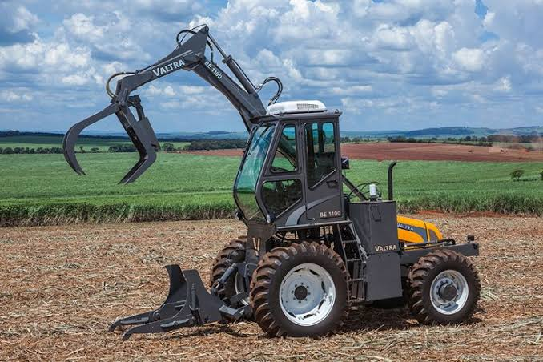
Órgãos de engate e transferência de energia
Acoplamento mecânico ao chassi (montagem integral):
São os implementos e máquinas agrícolas que são acoplados diretamente ao chassi do trator. Operam como se fossem máquinas autopropelidas, mas se diferenciam desses bem como dos equipamentos montados.
Órgãos de engate e transferência de energia
Órgãos de acoplamento por tração:
O engate pode ser realizado por um ponto, uma linha (dois pontos) ou por um plano (três pontos).
Órgãos de engate e transferência de energia
Órgãos de acoplamento por tração:
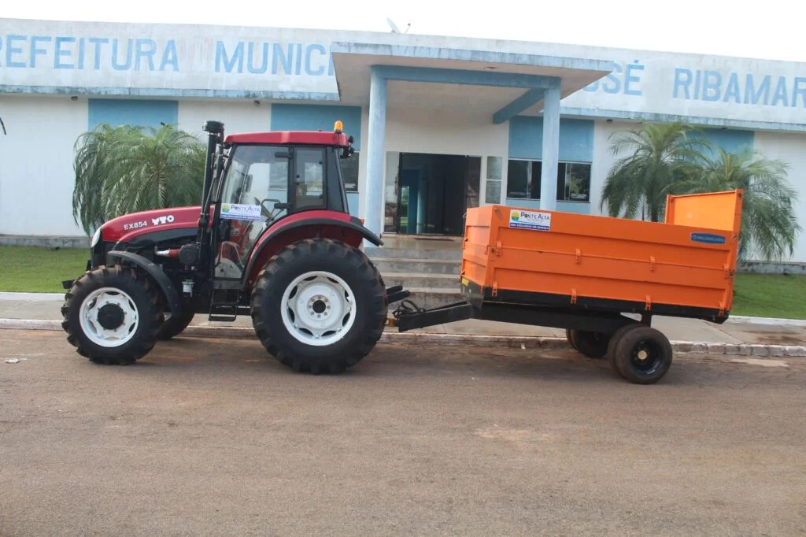
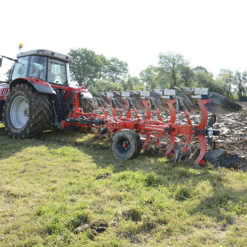
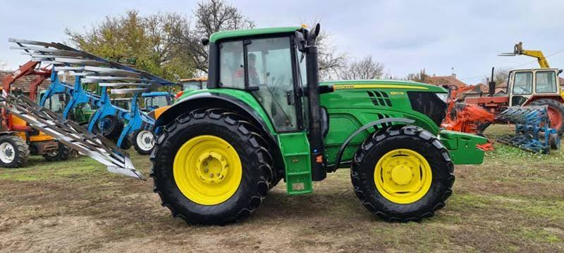
Órgãos de engate e transferência de energia
Equipamento de arrasto:
O engate é realizado em apenas um ponto por meio da barra de tração. Esse engate confere mobilidade horizontal e vertical ao equipamento.
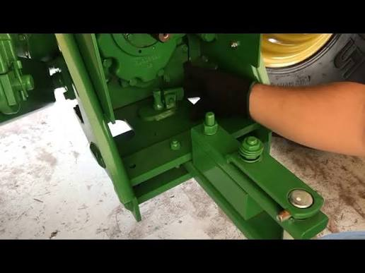
Órgãos de engate e transferência de energia
Barra de tração:
Elemento de conexão mecânica entre o trator e o implemento. Situada no centro do trator, na parte posterior inferior, na altura do seu centro de gravidade. Permite o acoplamento e a tração de implementos de arrasto, podendo ser usada de modo fixo ou oscilante.
Órgãos de engate e transferência de energia
Barra de tração:
Uma de suas extremidades é presa ao chassi do trator, enquanto a outra possui orifício, onde são acoplados os equipamentos.
Órgãos de engate e transferência de energia
Barra de tração:
- Engate fácil;
- Transmissão de potência entre 50 a 75%;
- Há 3 tipos de barras;
- Fixas;
- Oscilantes;
- Reguláveis.
Órgãos de engate e transferência de energia
Barra de tração fixa:
- Não possui movimento vertical e horizontal.
- Composta por uma única barra;
- Adequada para implementos simples e leves;
- Trabalho em apenas uma posição (altura em relação ao solo).
Órgãos de engate e transferência de energia
Barra de tração oscilante:
- Apenas movimento relativo no plano horizontal;
- Oscilação por remoção de pinos de fixação;
- Reduz o raio de giro do conjunto mecanizado.
Órgãos de engate e transferência de energia
Barra de tração ajustável:
- Permite o ajuste em múltiplas posições de operação;
- Posições regulares, curtas e estendidas.
Órgãos de engate e transferência de energia
Barra de tração formatos:
Órgãos de engate e transferência de energia
Barra de tração:
| Categoria | Potência da TDP à velocidade nominal do motor | |
|---|---|---|
| kW | cv | |
| 0 | ≤ 28 | ≤ 38 |
| 1 | ≤ 48 | ≤ 65 |
| 2 | ≤ 115 | ≤ 156 |
| 3 | ≤ 185 | ≤ 251 |
| 4 | ≤ 300 | ≤ 408 |
| 5 | ≤ 500 | ≤ 680 |
Determinado de acordo com a norma ISO 789-1 ou código 1 ou 2 da OCDE. Em caso de TDP não disponível, utilizar 86% da potência do motor.
Órgãos de engate e transferência de energia
Barra de tração:
|
Posição da barra de tração |
Categoria da barra de tração | |||||
|---|---|---|---|---|---|---|
| 0 | 1 | 2 | 3 | 4 | 5 | |
| Curta | 7,0 | 12,0 | 22,0 | 27,0 | 33,0 | 45,0 |
| Regular | 5,0 | 8,0 | 15,0 | 18,0 | 22,0 | 30,0 |
| Estendida | 3,5 | 6,0 | 11,0 | 13,0 | 16,0 | NA |
Classificações de cargas verticais estáticas (kN) para diferentes categorias de barras, de acordo com a norma ISO 6489-3:2004.
Órgãos de engate e transferência de energia
Barra de tração:
Tipos de engate
Órgãos de engate e transferência de energia
Barra de tração:
Tipos de engate
Órgãos de engate e transferência de energia
Sistema hidráulico de 3 pontos (SHPT):
Utiliza um fluido hidráulico sob pressão para realizar o controle de máquinas e implementos agrícolas de maneira simples, fácil e rápida. Permite que os equipamentos sejam levantados, abaixados e ajustados verticalmente.
É um sistema composto por um conjunto de válvulas, cilindros hidráulicos e por 3 pontos de conexão (Engate de 3 pontos).
Órgãos de engate e transferência de energia
Sistema hidráulico de 3 pontos:
Órgãos de engate e transferência de energia
Sistema hidráulico de 3 pontos:
O sistema é acionado por meio de uma alavanca localizada na cabine de operação ou por joysticks.
- Os equipamentos podem ser levantados para a posição de transporte;
- Abaixados para operação no solo;
- Ajuste de profundidade para trabalho.
Órgãos de engate e transferência de energia
Sistema hidráulico de 3 pontos:
Órgãos de engate e transferência de energia
Sistema hidráulico de 3 pontos:
Órgãos de engate e transferência de energia
Sistema hidráulico de 3 pontos:

Órgãos de engate e transferência de energia
Sistema hidráulico de 3 pontos:
| Categoria | Potência da TDP à rotação nominal do motor | |
|---|---|---|
| kW | cv | |
| 1N | Até 35 | Até 48 |
| 1 | Até 48 | Até 65 |
| 2N/2 | 30 a 92 | 41 a 125 |
| 3N/3 | 60 a 185 | 82 a 252 |
| 4N/4 | 110 a 350 | 150 a 476 |
*Adaptada da norma ISO 730:2009(E), Agricultural wheeled tractors — Rear-mounted three-point linkage — Categories 1N, 1, 2N, 2, 3N, 3, 4N and 4.
Órgãos de engate e transferência de energia
Sistema hidráulico de 3 pontos:
| Categoria | Potência da TDP à rotação nominal do motor | |
|---|---|---|
| kW | cv | |
| I | Até 36,9 | Até 50,2 |
| II | 37 a 73,9 | 50,3 a 100,5 |
| III | 74 a 146,9 | 100,6 a 199,7 |
| IV | Acima de 147 | Acima de 199,7 |
Associação Nacional dos Veículos Automotores.
Órgãos de engate e transferência de energia
Acoplamento hidráulico com mangueiras:
Órgãos de engate e transferência de energia
Acoplamento hidráulico com mangueiras:
Sistema encontrado na traseira do trator, porém há modelos com configurações na parte frontal.
Terminais de engate rápido ou tomadas hidráulicas são os responsáveis pela conexão.
O sistema hidráulico auxiliar (SHA) funciona com elevada pressão e vazão. Isso permite transmitir força e movimento para os equipamentos agrícolas.
- Suspensão dos rodados;
- Controle de profundidade;
- Acionamento de motores hidráulicos.
Órgãos de engate e transferência de energia
Acoplamento hidráulico com mangueiras:
Acoplados por conectores tipo macho e fêmea. Os conectores no trator são denominados de “fêmeas” e nas mangueiras dos implementos são denominados “machos”.
Órgãos de engate e transferência de energia
Acoplamento hidráulico com mangueiras:
Órgãos de engate e transferência de energia
Acoplamento hidráulico com mangueiras:
Órgãos de engate e transferência de energia
Acoplamento hidráulico com mangueiras:
Órgãos de engate e transferência de energia
Acoplamento hidráulico com mangueiras:

Órgãos de engate e transferência de energia
Acoplamento hidráulico com mangueiras:
Órgãos de engate e transferência de energia
Acoplamento hidráulico com mangueiras:
Regulador de vazão:
- Fluxo constante: motores hidráulicos (semeadoras a vácuo);
- Desarme automático: final do curso (subir ou abaixar implementos);
- Flutuação: o implemento acompanha as flutuações do terreno.
Órgãos de engate e transferência de energia
Acoplamento mecânico de torção (TDP):
Órgãos de engate e transferência de energia
Acoplamento mecânico de torção (TDP):
Tomada de potência é o órgão capaz de realizar a transferência de potência do motor do trator para os implementos ou máquinas acopladas.
É um eixo localizado na parte traseira ou frontal do trator, projetado para fornecer energia mecânica aos equipamentos.
No Brasil é mais comum a traseira, sendo a frontal um acessório.
Órgãos de engate e transferência de energia
Acoplamento mecânico de torção (TDP):
Órgãos de engate e transferência de energia
Acoplamento mecânico de torção (TDP):
O eixo da TDP é um meio muito eficiente de transferência de potência mecânica.
- A perda de potência do motor até a barra de tração é de 30 a 40%;
- Na TDP a perda é reduzida para 20%.
Órgãos de engate e transferência de energia
Acoplamento mecânico de torção (TDP):
Órgãos de engate e transferência de energia
Acoplamento mecânico de torção (TDP):
A conexão é realizada por meio de um cardan.
Órgãos de engate e transferência de energia
Acoplamento mecânico de torção (TDP):
Órgãos de engate e transferência de energia
Acoplamento mecânico de torção (TDP):
A TDP traseira é projetada para operar em rotação de 540 ou 1000 RPM, sempre no sentido horário.
A TDP frontal atinge 1000 RPM e pode girar no sentido horário e anti-horário.
Pode ser de 3 tipos:
- Dependente;
- Semi-independente;
- Independente.
Órgãos de engate e transferência de energia
Acoplamento mecânico de torção (TDP):
A TDP dependente é a convencional, com acionamento diretamente pelo eixo de transmissão do motor.
Quando a velocidade do trator é alterada, a velocidade da TDP também é afetada.
Encontrada em tratores mais antigos e menores.
Órgãos de engate e transferência de energia
Acoplamento mecânico de torção (TDP):
A semi-independente possui acionamento separado do eixo de transmissão do trator.
Acionado por meio de uma embreagem independente, com o pedal de embreagem apresentando dois cursos.
- Primeiro curso: desembreia a caixa de câmbio;
- O segundo curso: desembreia a TDP.
- Permite que ela seja acionada ou desligada independentemente da velocidade da transmissão do trator.
Órgãos de engate e transferência de energia
Acoplamento mecânico de torção (TDP):
A TDP independente possui seu próprio motor dedicado.
Pode ser ligada e desligada independentemente do motor ou da transmissão do motor.
Órgãos de engate e transferência de energia
Acoplamento mecânico de torção (TDP):
Para alterar a rotação é necessário trocar o eixo de saída.
Órgãos de engate e transferência de energia
Acoplamento mecânico de torção (TDP):
Órgãos de engate e transferência de energia
Acoplamento mecânico de torção (TDP):
| Especificações | Tipos | ||
|---|---|---|---|
| 1 | 2 | 3 | |
| Diâmetro do eixo (mm) | 35 | 35 | 45 |
| Número de estrias | 6 | 21 | 20 |
| Rotação (rpm) | 540 ± 10 | 1000 ± 25 | 1000 ± 25 |
| Sentido de rotação | Horário | ||
| Potência máx. | 48 kW | 92 kW | 185 kW |
| 65 cv | 125 cv | 252 cv | |
Órgãos de engate e transferência de energia
Exemplo de acionamento
Órgãos de engate e transferência de energia
Exemplo de acionamento